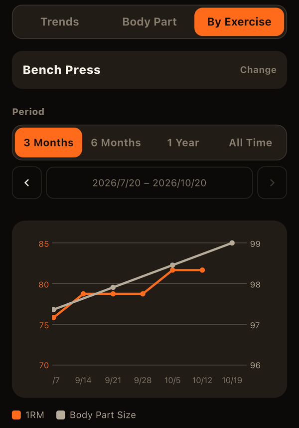

Last week you did 80 kg for 10 reps. This week, 85 kg for 6. The weight went up but the reps went down — is that progress? Because you don't always log the same number of reps, lining up weights alone rarely tells you much. That's where "estimated 1RM" helps.
What is 1RM?
1RM (one-repetition maximum) is the heaviest weight you can lift for a single rep of an exercise. It's a common measure of strength, but actually attempting a true max puts a lot of strain on the body and carries a risk of injury. Instead, you can estimate your 1RM from the sets you already do (weight and reps).
The Epley formula
One of the most widely used formulas is the Epley formula:
Estimated 1RM = weight x (1 + reps / 30)
Applied to the example above:
- 80 kg x 10 reps: 80 x (1 + 10/30) ≈ 106.7 kg
- 85 kg x 6 reps: 85 x (1 + 6/30) = 102.0 kg
Even though 85 kg is heavier, 80 kg for 10 reps gives the higher estimated 1RM. Putting sets with different rep counts on the same scale is exactly what makes estimated 1RM useful.
There are other formulas too, such as Brzycki (weight x 36 / (37 - reps)), and each gives slightly different numbers for the same set. What matters more than which one is "right" is sticking with the same formula over time.
Accuracy caveats
- More reps, more error: estimates work best for sets of roughly 10 reps or fewer. High-rep sets (say, over 20) depend heavily on muscular endurance and tend to drift from your real 1RM.
- It assumes you went to failure: the formula assumes that rep count was your limit. If you stopped with reps in reserve, the estimate will come out low. Logging how much you had left with RPE helps you read the number.
- It fits some exercises and people better than others: machines versus free weights, and individual differences in muscle makeup, change how well the estimate holds at the same rep count.
Estimated 1RM isn't a guarantee of what you can lift — it works best as a yardstick for your own progress.
How to use it
- Track one exercise over time: even across periods where you changed your sets and reps, one line shows whether you're getting stronger.
- Spot a real plateau: if your weight looks stuck but your reps are climbing, estimated 1RM is still going up. If it stays flat for weeks, that's a signal to revisit your program.
- Look at it relative to body weight: during a cut or a bulk, dividing estimated 1RM by body weight shows strength gains with the weight change factored out.
Comparing estimated 1RM across different exercises, like the bench press and the squat, isn't very meaningful. Follow it per exercise.
In LiFTY, the Analysis tab's "By Exercise" view charts your estimated 1RM over time. You can switch to "actual 1RM only" (just the weights you lifted for a single rep), view it relative to body weight, and see your best records for the period (PR history). You can also overlay two measures on one chart, such as estimated 1RM with volume, or with body weight (Using the Analysis Tab).

Related articles
- What Is Progressive Overload? The Basic Principle Behind Every Gain
- What Is Training Volume? How to Calculate It and Beat Plateaus
- What Is RPE? How to Use It in Strength Training
LiFTY calculates estimated 1RM from the sets you log and charts it for every exercise, so you can see at a glance whether you're getting stronger, even when your rep counts vary. No account needed to start right away.
Download on the App Store